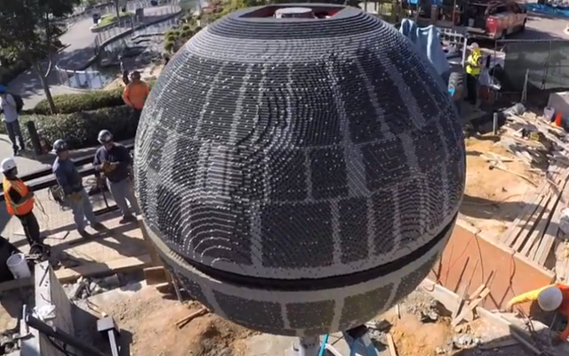
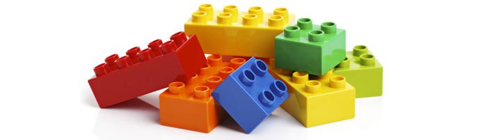
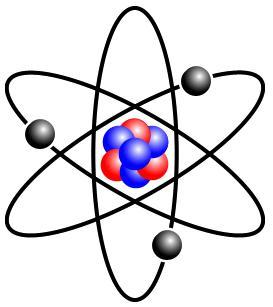
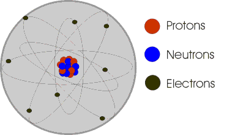
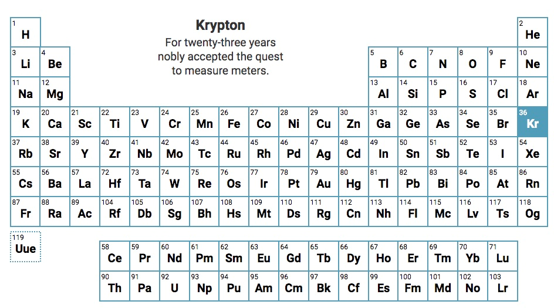

Salut ! Aujourd’hui, je vais t’emmener voyager un peu et t’expliquer quelques trucs sur ce qu’est la matière !
Tout autour de toi, tu peux observer qu’il existe des choses (des tables, des murs, des arbres, la route, la maîtresse, tes camarades…).
Quand tu touches ces choses, tu vois que ta main ne passe pas au travers, et que si tu veux les pousser ou les porter, tu dois faire un effort. Eh bien c’est parce que dans ces choses il n’y a pas rien : il y a de la matière.
Pourtant, même si toutes ces choses sont de la matière, tu comprends bien que le mur, un arbre, ou même ton camarade de classe ne sont pas la même chose ! Existe-il donc plusieurs sortes de matières ?
Pour répondre à cette question, il faut zoomer sur la matière.
Pour comprendre ce qu’est la matière, tu peux voir ça comme des Legos ; imagine que toute la matière est constituée de Lego :

Par exemple, considère ce vaisseau de l’étoile noire de Star Wars (construit en légos).
Tu peux facilement casser ce vaisseau. Tu vas alors créer des morceaux plus petits de ce vaisseau. Pour chaque morceau, tu vas pouvoir le casser à nouveau, et obtenir des morceaux plus petits encore. Tu vas pouvoir recommencer jusqu’à ce que tes morceaux soient des briques Lego :

A partir de là, tu ne pourras plus continuer à casser les morceaux, parce que ces briques Lego sont les plus petits « éléments » de Lego qui existent ; ce sont eux qui forment tout le reste en s’assemblant. On dit que ce sont des « briques élémentaires » de Lego.
Eh bien pour la matière, c’est exactement pareil!
Prenons un bâton par exemple, qui est constitué de matière. Tu peux le prendre, et le casser en 2, prendre l’un des 2 morceaux, le casser en deux et ainsi de suite, jusqu’à arriver à des « briques élémentaires» de matière, comme pour les Lego.
La différence avec les Lego, c’est que ces « briques élémentaires de matière» sont extrêmement petites, et tu ne peux pas les voir avec tes yeux ; ils sont des milliards de milliards de fois plus petits qu’une fourmis!
Les atomes
Les scientifiques donnent un nom simple à ces «briques élémentaires de matière » : ils les appellent les atomes.
Tout ce que tu vois autour de toi (le mur, l’arbre, la chaise, ta maîtresse préférée…) est un giiiiiiigantesques ensemble d’atomes, qui s’assemblent entre eux comme les Legos, pour former des objets plus gros. Mais pour comprendre pourquoi ta maîtresse n’est pas un arbre, je vais expliquer plus en détails ce qu’est un atome :

En savoir plus
Un atome est constitué d’un noyau, comme pour les fruits, autour duquel tournent des petites boules (comme des billes). Ces petites billes, en noir sur le dessin, sont appelés électrons.
Le noyau, quant à lui, est formé de 2 types de billes : les protons (ici en rouge), et les neutrons (en bleu).
Les atomes vont alors se lier entre eux, comme des briques de Lego, grâce aux électrons (noirs), qui vont se lier entre eux d’un atome à l’autre.
Le nom qu’on donne à ces billes n’est pas important ici.
En savoir plus
Ce qui est important, c’est qu’il y a le même nombre de billes rouges (protons), fixes au milieu dans le noyau, que de billes noires (électrons), qui tournent autour du noyau. Ce nombre est très important, et on l’appelle numéro atomique, et on le note Z.
Par exemple, l’atome qui est représenté en dessin en haut porte le numéro Z=3 ; c’est l’atome numéro 3 si tu veux, parce qu’il y a 3 protons rouges et 3 électrons noirs.

Mais si tu ne vois pas l’oxygène que tu respires, c’est parce que les atomes d’oxygène ne s’assemblent pas beaucoup comme les Lego : ils s’assemblent deux par deux, comme vous quand vous rentrez en classe, et c’est tout ! Mais tous les atomes ne sont pas aussi timides !
Tu connais aussi très bien un autre élément : c’est le Fer, qui est un métal (le métal est un certain type de matière) qui permet de construire beaucoup de choses.
Les atomes de fer ont le numéro 56.
Les atomes de fer peuvent très facilement s’assembler entre eux sans limite ! C’est pour ça qu’ils forment des objets ENORMES, si énormes que tu arrives à les voir avec tes yeux, et tu peux même les prendre et les porter.
Pourquoi donc le mur de ta classe, l’arbre dans la cour, ou ta maîtresse, qui sont tous de la matière, ne sont pas la même chose ?
C’est parce qu’ils ne sont pas constitutés par les mêmes atomes !, donc pas par les mêms élements.
On classe généralement les éléments dans un tableau qui s’appelle La classification périodique des éléments, crééer par le physicien Russe Mendeleïev :

Par exemple l’oxygène, de numéro 8, se trouve à la 2ème ligne dans la case numéro 8 appelée O comme dans Oxygène.
Et le numéro 79 c’est quoi ? C’est l’or ! Ce métal hyper précieux dont tu as sûrement déjà entendu parler beaucoup de fois, c’est un élément de la matière ! Il est formé d’un assemblage ENORME d’atomes d’or, de numéro 79, qui sont très très rares !!
Mais pourquoi a-t-on classé les éléments de cette façon ? Ca tableau a une forme bizarre…
Haha, ça c’est pas facile à l’expliquer ! Mais tu l’apprendras plus tard, patience ;)